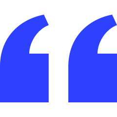

Sobre
 Blog dedicado ao compartilhamento de informações, curiosidades e notícias a respeito dos animes mais amados da nossa comunidade, em um ambiente amigável e agradável, não só para aqueles que já estão inseridos nesse meio mas, também, para os novatos.
Minha intenção com a criação e mantimento desse blog é de compartilhar e disseminar a cultura dos nossos tão amados desenhos japoneses, bem como curiosidades, notícias e uma conversa desscontraída entre nossa comunidade.